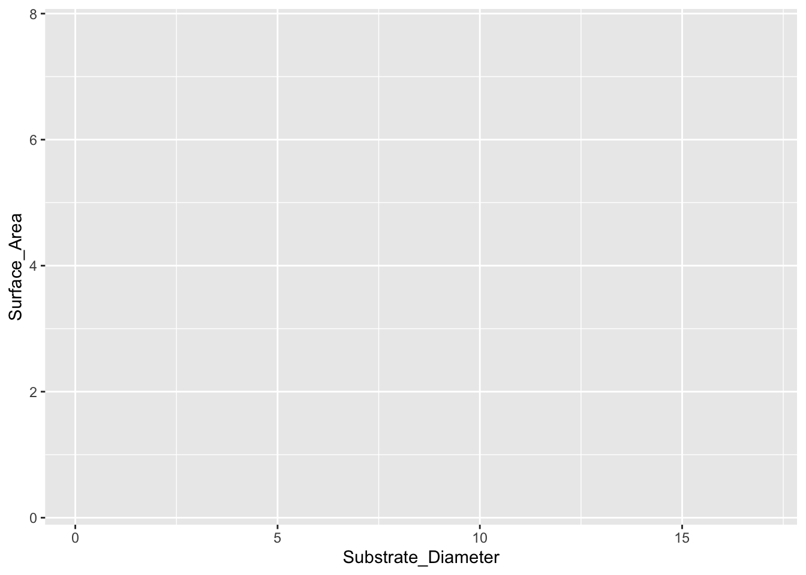
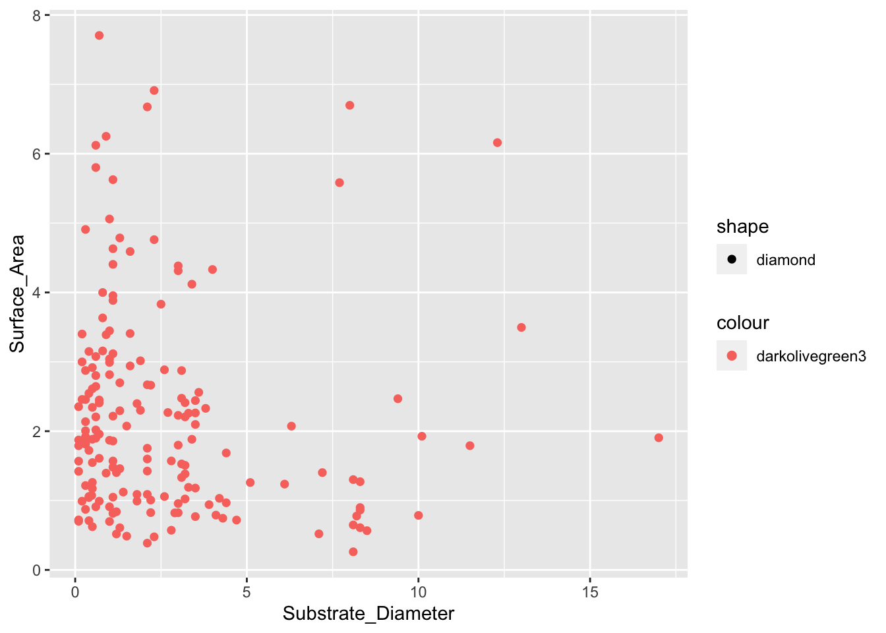
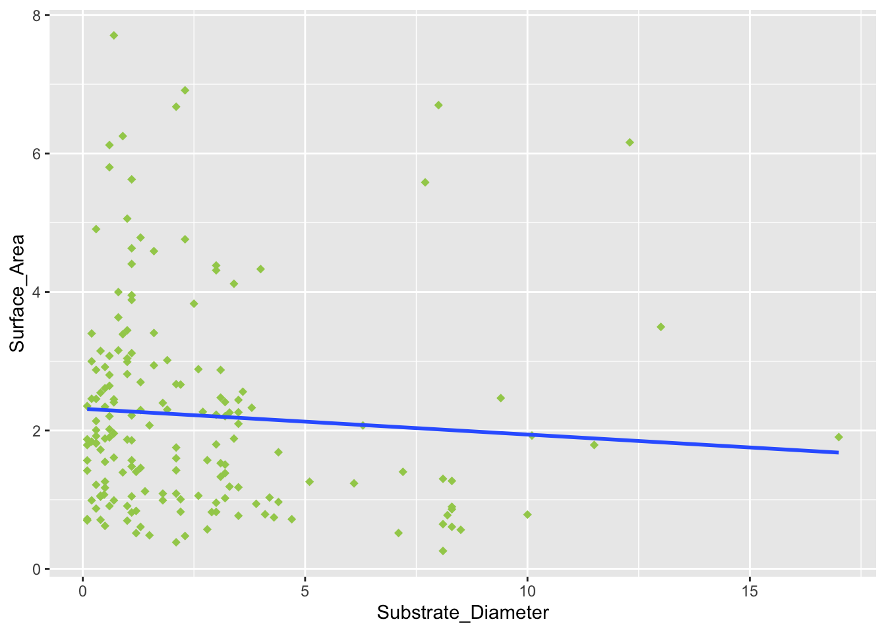

## load packages
library(tidyverse)── Attaching core tidyverse packages ──────────────────────── tidyverse 2.0.0 ──
✔ dplyr 1.1.4 ✔ readr 2.1.5
✔ forcats 1.0.0 ✔ stringr 1.5.1
✔ ggplot2 3.4.4 ✔ tibble 3.2.1
✔ lubridate 1.9.3 ✔ tidyr 1.3.1
✔ purrr 1.0.2
── Conflicts ────────────────────────────────────────── tidyverse_conflicts() ──
✖ dplyr::filter() masks stats::filter()
✖ dplyr::lag() masks stats::lag()
ℹ Use the conflicted package (<http://conflicted.r-lib.org/>) to force all conflicts to become errorslibrary(readxl)
## load lichen data from excel. do i need to save it as a csv? did it anyway
lichen_data <- read_excel("/Users/carteryoung/Desktop/cr/FULL_coenogonium.xlsx")
write.csv(lichen_data, "lichen.csv", row.names = FALSE)
## head to check it
head(lichen_data, 10)# A tibble: 10 × 2
Substrate_Diameter Surface_Area
<dbl> <dbl>
1 17 1.90
2 13 3.50
3 12.3 6.16
4 11.5 1.79
5 10.1 1.93
6 10 0.786
7 9.4 2.47
8 8.5 0.566
9 8.3 1.27
10 8.3 0.899## make a plot!
(g <- ggplot(lichen_data, aes(x = `Substrate_Diameter`, y = `Surface_Area`)))
## why's it got x and y labels and no numbers?
## asked ChatGPT and it told me I needed to put in the vars. names as `name_name` instead of the usual quotes. works now!
## adding points
g + geom_point(aes(color = "darkolivegreen3", shape = "diamond"), size = 2)
## that is neither darkolivegreen or a diamond! moving on anyway
## adding linear regression, fixed earlier problems w/ color
## looks nicer when indented...
g + geom_point(aes(x = `Substrate_Diameter`, y = `Surface_Area`),
shape = "diamond",
color = "darkolivegreen3",
size = 2) +
geom_smooth(method = "lm", se = FALSE)`geom_smooth()` using formula = 'y ~ x'